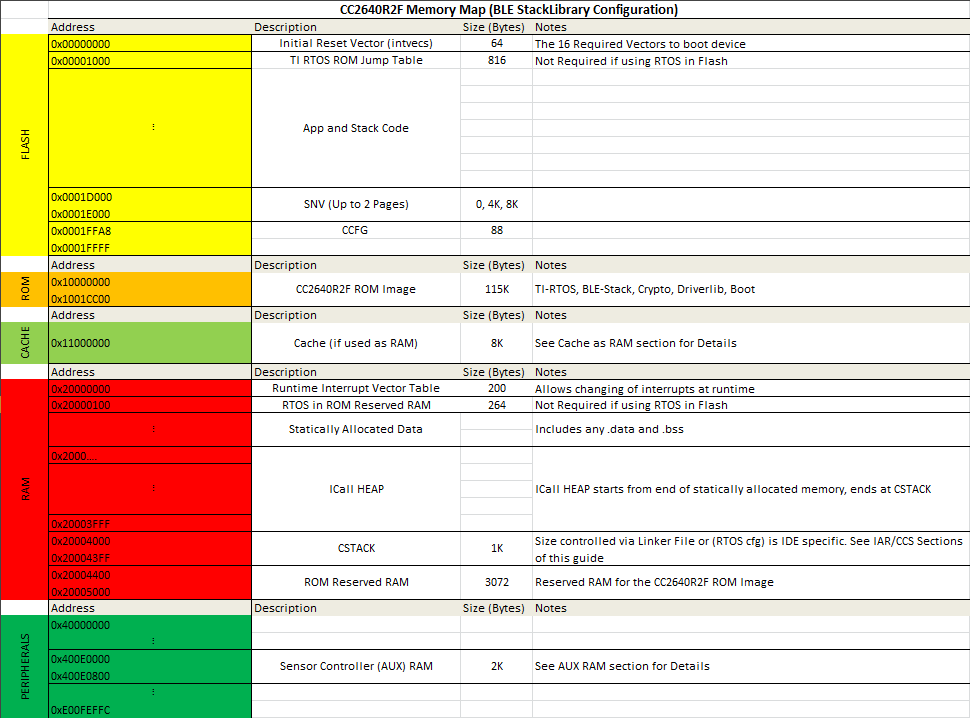
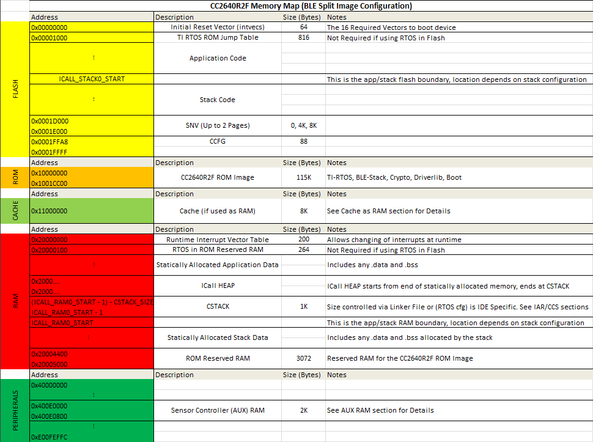

Memory Management¶
The CC2640R2F contains serveral memory regions including RAM, ROM, Flash, Cache, and AUX/Peripheral. This section aims to show how these memory regions are utilized by the stack and user application.
There are two memory conifurations supported; split image and stack as a library. These configurations mainly differ in their FLASH and RAM layouts. See Figure 29. and Figure 30. for a comparision.
Figure 29. StackLibrary Memory Map
See Stack Library Configuration (_stack_library) and Split Image Configuration for a reference on the differences between the two configurations and why they may be used.
Figure 30. Split Image Memory Map
Flash¶
The flash is split into erasable pages of 4kB. The various sections of flash and their associate linker files are as follows. The following sections are present in both split image and stack library configurations.
- Flash Reset Vector Table: This table holds the first 16 reset vectors that are critical for booting up the device. These vectors are set at build time and cannot be dynamically changed. See Flash Vector Table below for more information.
- TI-RTOS in ROM Jump Table: This table holds information required by the TI-RTOS kernel in ROM, the location of this table is fixed by the ROM image of the device and cannot be changed if using TI-RTOS in ROM, for a flash only kernel, this table is not required. This is also referred to the RCFG.
- Simple NV (SNV) Area: used for nonvolatile memory storage by the GAP Bond Manager and also available for use by the application. See Using Simple NV for Flash Storage for configuring SNV. When configured, the SNV flash storage area is part of the stack image.
- Customer Configuration Area (CCA): the last sector of flash used to store customer-specific chip configuration (CCFG) parameters. The unused space of the CCA sector is allocated to the application project. See Customer Configuration Area.
For projects where the stack project builds a library:
- Application and Stack Image Code Space: A single region that contains both application and stack code in flash. This image is configured in the linker configuration file of the application: cc26xx_app_and_stack.icf (IAR) and cc26xx_app.cmd (CCS). As opposed to split image projects, there is only one image.
For projects where the stack project builds as a split image:
- Application Image Code Space: used for the application project. This image is configured in the linker configuration file of the application: cc26xx_app.icf (IAR) and cc26xx_app.cmd (CCS).
- Stack Image Code Space: use for the stack project. This image is configured in the linker configuration file of the stack: cc26xx_stack.icf (IAR) and cc26xx_ stack.cmd (CCS).
- ICALL_STACK0_START: The flash boundary address between Application and stack code space as listed above. This boundary is the entry point into the stack image and is defined in the boundary file. See Frontier Tool for more information on boundary files.
Flash Vector Table¶
This table contains the first 16 critical interrupt vectors required for the bootup process. The location of this table is controlled by m3Hwi.resetVectorAddress within the TI-RTOS config file (*.cfg), it defaults to address 0x00000000. At bootup time, the TI-RTOS kernel will run a first function to initialize the Hwi module. At this time the flash vector table will be copied to the RAM location shown in Figure 29. and Figure 30. and the VTOR register will be moved to point to the RAM table. For more information about the vector table format, please refer to Cortex-M3 Vector Table.
For more information on the kernel boot process and first functions, please see: SYS/BIOS Boot Wiki.
Application and Stack Flash Boundary¶
The application and stack code images are based on the common ICALL_STACK0_ADDR and ICALL_STACK0_START predefined symbols. These values define the hard-coded flash address of the entry function for the stack image: it is essentially the word-aligned flash address of the application-stack project boundary. To ensure proper linking, both the application and stack projects must use the same defined symbols. By default, the linker is configured to allocate unused flash to the application project but can be modified manually or automatically through the frontier tool. For information on using the frontier tool to configure the flash boundary address, see Frontier Tool.
Using Simple NV for Flash Storage¶
The Simple NV (SNV) area of flash is used for storing persistent data, such as encryption keys from bonding or to store custom defined parameters. The protocol stack can be configured to reserve up to two 4kB flash pages for SNV, although valid data is only stored in one active flash page. To minimize the number of erase cycles on the flash, the SNV manager performs compaction on the flash sector (or sectors) when the sector has 80% invalidated data. A compaction is the copying of valid data to a temporary area followed by an erase of the sector where the data was previously stored. Depending on the OSAL_SNV value as described in OSAL_SNV Values, this valid data is then either placed back in the newly erased sector or remains in a new sector. The number of flash sectors allocated to SNV can be configured by setting the OSAL_SNV preprocessor symbol in the stack project. Table 8. lists the valid values that can be configured as well as the corresponding trade-offs.
| OSAL_SNV Value | Description |
| 0 | SNV is disabled. Storing of bonding keys in NV is not possible. Maximizes code space for the application and/or stack project. GAP Bond Manager must be disabled. In the Stack project, set pre- processor symbol NO_OSAL_SNV and disable GAP Bond Manager. See Stack Configurations for configuring Bluetooth low energy protocol stack features. |
| 1 (default) | One flash sector is allocated to SNV. Bonding info is stored in NV. Flash compaction uses flash cache RAM for intermediate storage, thus a power-loss during compaction results in SNV data loss. Also, due to temporarily disabling the cache, a system performance degradation may occur during the compaction. Set preprocessor symbol OSAL_SNV=1 in the Stack project. |
| 2 | Two flash sectors are allocated to SNV. Bonding information is stored in NV. SNV data is protected against power-loss during compaction. |
Other values for OSAL_SNV are invalid. Using less than the maximum value has the net effect of allocating more code space to the application or stack project. SNV can be read from or written to using the following APIs.
uint8 osal_snv_read( osalSnvId_t id, osalSnvLen_t len, void *pBuf)
| Read data from NV | |
| Parameters | id - valid NV item len - length of data to read pBuf - pointer to buffer to store data read |
| Returns | SUCCESS: NV item read successfully NV_OPER_FAILED: failure reading NV item |
uint8 osal_snv_write( osalSnvId_t id, osalSnvLen_t len, void *pBuf)
| Write data to NV | |
| Parameters | id - valid NV item len - length of data to write pBuf - pointer to buffer containing data to be written. All contents are updated at once. |
| Returns | SUCCESS: NV item write successfully NV_OPER_FAILED: failure writing NV item |
Because SNV is shared with other modules in BLE-Stack such as the GAP Bond Manager, carefully manage the NV item IDs. By default, the IDs available to the customer are defined in bcomdef.h as shown in Listing 26.
1 2 3 4 5 6 7 8 9 10 11 12 13 14 15 16 17 | // Device NV Items - Range 0 - 0x1F
#define BLE_NVID_IRK 0x02 //!< The Device's IRK
#define BLE_NVID_CSRK 0x03 //!< The Device's CSRK
#define BLE_NVID_SIGNCOUNTER 0x04 //!< The Device's Sign Counter
#define BLE_LRU_BOND_LIST 0x05 //!< The Device's order of bond indexes in least recently used order
// Bonding NV Items - Range 0x20 - 0x5F - This allows for 10 bondings
#define BLE_NVID_GAP_BOND_START 0x20 //!< Start of the GAP Bond Manager's NV IDs
#define BLE_NVID_GAP_BOND_END 0x5f //!< End of the GAP Bond Manager's NV IDs Range
// GATT Configuration NV Items - Range 0x70 - 0x79 - This must match the number of Bonding entries
#define BLE_NVID_GATT_CFG_START 0x70 //!< Start of the GATT Configuration NV IDs
#define BLE_NVID_GATT_CFG_END 0x79 //!< End of the GATT Configuration NV IDs
// Customer NV Items - Range 0x80 - 0x8F - This must match the number of Bonding entries
#define BLE_NVID_CUST_START 0x80 //!< Start of the Customer's NV IDs
#define BLE_NVID_CUST_END 0x8F //!< End of the Customer's NV IDs
|
Listing 27. shows how to read and write an array of bytes from SNV flash:
/*********************************************************************
* GLOBAL VARIABLES
*/
#define BUF_LEN 4
#define SNV_ID_APP 0x80
uint8 buf[BUF_LEN] ={0,};
static void SimpleBLEPeripheral_taskFxn(UArg a0, UArg a1)
{
// Initialize application
SimpleBLEPeripheral_init();
uint8 status = SUCCESS;
status = osal_snv_read(SNV_ID_APP, BUF_LEN, (uint8 *)buf);
if(status != SUCCESS)
{
Display_print1(dispHandle, 0, 0, "SNV READ FAIL: %d", status);
//Write first time to initialize SNV ID
osal_snv_write(SNV_ID_APP, BUF_LEN, (uint8 *)buf);
}
//Increment first element of array and write to SNV flash
buf[0]++;
status = osal_snv_write(SNV_ID_APP, BUF_LEN, (uint8 *)buf);
if(status != SUCCESS)
{
Display_print1(dispHandle, 0, 0, "SNV WRITE FAIL: %d", status);
}
else
{
Display_print1(dispHandle, 0, 0, "Num of Resets: %d", buf[0]);
}
// Application main loop
for (;;)
{
//...
}
}
No prior initialization of a NV item ID is required; the OSAL SNV manager initializes the NV ID when first accessed by a successful osal_snv_write() call.
When reading or writing large amounts of data to SNV, TI recommends placing the read/write data in statically (linker) allocated arrays or buffers allocated from the heap. Placing large amounts of data in local arrays may result in a task stack overflow.
By default, osalSnvId_t and osalSnvLen_t are type defined as uint8. To use uint16-type definitions, define the preprocessor symbol OSAL_SNV_UINT16_ID in both the application and stack projects.
Using osal_snv_read and osal_snv_write is only permitted from within a task context. Calling this API is not possible from within Swis or Hwis.
Customer Configuration Area¶
The Customer Configuration Area (CCA) occupies the last page of flash and lets a customer configure various chip and system parameters in the Customer Configuration (CCFG) table . The CCFG table is defined in ccfg_app_ble.c, which can be found in the Startup folder of the application project. The last 88 (sizeof(ccfg_t)) bytes of the CCA sector are reserved by the system for the CCFG table. By default, the linker allocates the unused flash of the CCA sector to the application image for code and data use. The linker can be modified to reserve the entire sector for customer parameter data (for example, board serial number and other identity parameters).
The CCA region is defined linker file of the application by the FLASH_LAST_PAGE symbol. Placement is based on the IDE:
For CCS:
MEMORY { ... // CCFG Page, contains .ccfg code section and some application code. FLASH_LAST_PAGE (RX) : origin = FLASH_LAST_PAGE_START, length = FLASH_PAGE_LEN ... } SECTIONS { ... .ccfg : > FLASH_LAST_PAGE (HIGH) ... }
For IAR:
//////////////////////////////////////////////////////////////////////////////// // Memory Regions //////////////////////////////////////////////////////////////////////////////// ... define region FLASH_LAST_PAGE = mem:[from(FLASH_SIZE - PAGE_SIZE) to FLASH_SIZE-1]; ... //////////////////////////////////////////////////////////////////////////////// ... // CCFG place at end of FLASH_LAST_PAGE { readonly section .ccfg }; keep { section .ccfg }
See the CC26xx Technical Reference Manual for details on CCFG fields and related configuration options, including how to set the CCFG to disable access to internal flash memory contents.
RAM¶
There is 20kB of RAM availabe in the system. The various sections of RAM and their associated linker files are as follows. The following sections are present in both split image and stack library configurations.
- CSTACK: This the system callstack used by the C main function and HWIs. See System Stack for more information
- RAM Reset Vector Table: This table holds entries for all 50 supported reset vectors. It is initalzed from the flash reset vector table at boot time and is used to plug interrupt table entries at runtime. See RAM Vector Table for more information.
- ROM Reserved RAM: When building an configuration that links to code in
ROM certain sections of RAM must be reserved for the static allocations
performed in ROM. This includes the
RTOS in ROM Reserved RAMand theROM Reserved RAMsections in Figure 29. and Figure 30.. If the active configuration doesn’t use ROM, these sections may be used for other purposes. - HEAP: All configurations require that a heap must be present for dynamic memory allocation. This heap is shared between the app and stack. There are multiple configurations of the heap that may be used, each has associated tradeoffs. See Dynamic Memory Allocation for information about heaps. Additionally see Debugging Common Heap Issues for more information on debugging common heap issues.
For projects where the stack project builds a library:
- Application and Stack statically allocated data: This includes any initialized and uninitialzed variables used by the application or stack. (.data,.bss)
For projects where the stack project builds as a split image:
- Application statically allocated data: This includes any initialized and uninitialzed variables used by the application. (.data,.bss)
- Stack statically allocated data: This includes any initialized and uninitialzed variables used by the stack. (.data,.bss)
- ICALL_RAM0_START: The RAM boundary address between Application and
stack data space as listed above. This boundary is the entry point into the
stack image and is defined in the boundary file. See Frontier Tool
for more information. Note the RAM boundary includes
ROM Reserved RAMused by the protocol stack as part of the stack image, but leavesRTOS in ROM Reserved RAMin the application space. The stack RAM grows down from the reserved area and its size may depend on the active stack configuration.
RAM Vector Table¶
As detailed in the Flash Vector Table section, this table is
intiailzed at kernel boot time with the contents of of the flash vector table.
The location of this table is controlled by m3Hwi.vectorTableAddress within
the TI-RTOS config file (*.cfg), it defaults to address 0x20000000.
The VTOR register will point to this table, which allows the creation of
dynamic interrupts at runtime. This table will contain entries for all 50
supported interrupts.
For more information about the vector table format, please refer to Cortex-M3 Vector Table.
Application and Stack RAM Boundary¶
The application and stack RAM memory maps are based on the common ICALL_RAM0_START defined symbol. This value defines the hard-coded RAM boundary for the end of the RAM space of the application and the start of the image of the stack .BSS and .DATA sections. Unlike the flash boundary, elements of the stack project (such as task stacks and heaps) are allocated in the application project. To ensure proper linking, both the application and stack projects must use the same ICALL_RAM0_START value. By default, ICALL_RAM0_START is configured to allocate unused RAM to the application project through the frontier tool. For information on using the frontier tool to configure the RAM boundary address, see Frontier Tool.
System Stack¶
As described in Tasks, each task has its own runtime stack for context switching. Another runtime stack is used by the RTOS for main(), HWIs, and SWIs. This system stack is allocated in the application linker file to be placed at the end of the RAM of the application.
For IAR, this RTOS system stack is defined by the CSTACK symbol:
////////////////////////////////////////////////////////////////////////////////
// Stack
define symbol STACK_SIZE = 0x400;
define symbol STACK_START = RAM_END + 1;
define symbol STACK_END = STACK_START - STACK_SIZE;
//
define symbol STACK_TOP = RAM_END + 1;
export symbol STACK_TOP;
// Runtime Stack
define block CSTACK with alignment = 8, size = STACK_SIZE { section .stack };
place at end of RAM { block CSTACK };
In IAR, to change the size of the CSTACK, adjust the STACK_SIZE symbol value in the linker file of the application.
For CCS, the RTOS system stack is defined by the Program.stack parameter in the appBLE.cfg RTOS configuration file:
/* main() and Hwi, Swi stack size */
Program.stack = 1024;
and placed by the linker in the RAM space of the application:
/* Create global constant that points to top of stack */
/* CCS: Change stack size under Project Properties */
__STACK_TOP = __stack + __STACK_SIZE;
Dynamic Memory Allocation¶
The system uses a single heap for dynamic memory allocation. This heap is shared between TI-RTOS, the protocl stack, and the application.
The heap is configured with a small heap in the a ble_stack_heap.cfg RTOS
configuration file:
Using the RTOS configuration file above the heap can be configured in one of three ways. Regardless of the underlying heap implementation, the APIs to access the heap are common.
- OSAL Heap (legacy) - This is the legacy heap manager created to work with the stack. It is implemented by
rtos_heaposal.h. The OSAL heap suppports creating variable sized blocks as well as freeing blocks.- TI-RTOS HeapMem - The most flexible heap implementation offered by the TI-RTOS kernel. HeapMem suppports creating variable sized blocks as well as freeing blocks. It is implemented by
rtos_heapmem.hwhen using RTOS in ROM and by direct calls when using RTOS in flash. See HeapMem with TI-RTOS in ROM for details on using the HeapMem module in ROM with the stack.- TI-RTOS HeapMem with HeapTrack - The most flexible heap implementation offered by the TI-RTOS kernel. HeapMem suppports creating variable sized blocks as well as freeing blocks. It is implemented by
rtos_heaptrack.hwhen using RTOS in ROM and by direct calls when using RTOS in flash. On top of the functionality offered by HeapMem, HeapTrack offers additional debugging capability, at the cost of runtime performance. See HeapMem with TI-RTOS in ROM for details on using the HeapMem module in ROM with the stack.
Configuring the Heap¶
There active heap configuration is set via the HEAPMGR_CONFIG variable within
ble_stack_heap.cfg. This size of the heap is controlled via HEAPMGR_SIZE, if
auto heapsizing is not used.
The system will default to using the OSAL heap with auto heap size. The table
below shows the possible configurations of the heap along with their associated
values of HEAPMGR_CONFIG and HEAPMGR_SIZE.
HEAPMGR_CONFIG |
Active Heap Configuration | Heap Size |
| 0x0 | OSAL HeapMgr, automatic heap size | Set by HEAPMGR_SIZE |
| 0x80 | OSAL HeapMgr, static heap size | Automatically determined by the amount of free space available at link time between heapStart and heapEnd symbols |
| 0x01 | HeapMem, static heap size | Set by HEAPMGR_SIZE |
| 0x81 | HeapMem, automatic heap size | Automatically determined by the amount of free space available at link time between heapStart and heapEnd symbols |
| 0x02 | HeapMem + HeapTrack, static heap size | Set by HEAPMGR_SIZE |
| 0x82 | HeapMem + HeapTrack, automatic heap size | Automatically determined by the amount of free space available at link time between heapStart and heapEnd symbols |
Warning
If autoheap size is to be used,
heapStartandheapEndsymbols must be defined in the linker file. See StackLibrary Memory Map and Split Image Memory Map for the location of these sections in the StackLibrary and split image configurations.
heapStart– Placed at end of static allocation sectionheapEnd– Placed right before beginning of CSTACK section
See the snippet below from ble_stack_heap.cfg to see how to change the
active heap configuration. Change the variable in the highlighted line to one of
the values supported in the table above.
HeapMem with TI-RTOS in ROM¶
When using any HeapMem based configuration combined with TI-RTOS in ROM, the heap will be implemented by HeapCallback module. HeapCallback will call a user defined function whenever a dynamic memory operation is required. The user defined functions are located in the following files.
rtos_heapmem.h– HeapMemrtos_heaptrack.h– HeapMem + HeapTrack
This is required because the HeapMem implementation in ROM uses the GateMutex
module, which prevents malloc() from being called in a hwi or
swi. In order to allow safe use of the heap a GateHWI must be used. To
work around this, the HeapCallback implementation will wrap any access to the
heap in a HWI lock. See the following example from rtos_heapmem.h.
/* Protect since HeapMem_allocUnprotected does not */ hwikey = (uint_least16_t)Hwi_disable(); /* Using the default system heap for this example */ tmp = HeapMem_allocUnprotected(stackHeap, size, FORCED_ALIGNEMENT); // .. /* restore the hwi mutex */ Hwi_restore(hwikey);Note
Note that the legacy OSAL heap always protects heap operations with a HWI lock.
When using a flash based kernel, the HeapMem module is configured to use a
GateHWI, see the following excerpt from ble_stack_heap.cfg.
Program.global.stackHeap = HeapMem.create(heapMemParams); var GateHwi = xdc.useModule('ti.sysbios.gates.GateHwi'); HeapMem.common$.gate = GateHwi.create(); Memory.defaultHeapInstance = Program.global.stackHeap;
Profiling the Heap¶
Refer to Debugging Common Heap Issues for tips on debugging common heap issues. Each heap implementation has its benefits for debugging and some come with performance tradeoffs. Note the metrics function may be used by any supported heap configuration.
Note
The auto heap size feature does not determine the amount of heap needed for the application. The system designer must ensure that the heap has the required space to meet the application’s runtime memory requirements.
Heap APIs¶
Note that regardless of the heap imeplementation selected, the APIs are compatible across all supported heap implementations. The follwoing APIs may be used to access the heap:
ICall_heapMalloc– Dynamically allocate a block of memoryICall_heapFree– Dynamically free a block of memoryICall_heapRealloc– Resize an existing heap blockICall_heapGetStats– Get information about the state of the heap
The following is an example of dynamically allocating a variable length (n) array using the ICall heap:
//define pointer
uint8_t *pArray;
// Create dynamic pointer to array.
if (pArray = (uint8_t*)ICall_malloc(n*sizeof(uint8_t)))
{
//fill up array
}
else
{
//not able to allocate
}
The following is an example of freeing the previous array:
ICall_free(pMsg->payload);
Cache/GPRAM¶
The cache is an 8 KB section of the device’s RAM reserved for the processor. The cache module temporarily stores data that has been read from the Flash, so that frequently used data is not fetched from Flash on each access. This reduces CPU wait-states and saves power. When the cache is not used, it is not powered. This is true for Standby and Idle states where the cache is not in use.
Using the Cache as RAM¶
If your application needs more memory, or if you need more space in SRAM, the cache can be re-purposed as RAM. This will allow the linker to store parts of the compiled application in this section of the RAM. This section will be referred to as the general purpose RAM (GPRAM). This will cause the program to run at a slightly reduced speed, and it will increase the device power consumption in sleep. This is because the GPRAM, contrary to a cache, will have to be powered even when the device is sleeping. The current consumption in standby mode with and without cache retained is listed in the CC2640R2F datasheet.
With the cache re-purposed as RAM, the program will run at a slightly decreased speed. This will cause the device to spend more time when active, which again will give a higher power consumption. How this will affect the device power consumption will depend on application. For some applications the added power consumption will be very small, but for processing intensive application it will be slightly higher. Please verify your application current consumption by using the method described in Measuring Bluetooth Low Energy Power Consumption Application Report (SWRA478).
In order to enable using the cache as RAM, two things need to be done. Firstly, the program must be told to retain the cache/GPRAM when it’s being used. Secondly, the linker must be told to allocate the memory region used as cache to GPRAM, and what parts of code to store in the GPRAM. This is done in the linker command/configuration file. The syntax for the linker command/configuration file is slightly different in CCS and IAR. To read more about the CCS linker command file, see the wiki article Linker Command File Primer. To read more about the IAR linker, see IAR C/C++ Development Guide.
Some of the example projects found in BLE-Stack have a Build Configuration that allows using the cache as RAM. This is true for e.g. the multi_role project. In this case, cache as RAM can be enabled by choosing that build configuration. In CCS: Project -> Build Configurations -> Set Active -> FlashROM-CacheAsRAM. In IAR: Project -> Edit Configurations -> FlashROM-CacheAsRAM.
Warning
When changing the build configuration of a project, the project properties/options may reset. Please make sure to make changes to the project predefines etc., after changing the build configuration.
If you want to use the cache as RAM in a project which does not have the CacheAsRAM build configuration, follow these steps:
Note
The steps will be different for CCS users and IAR users. The steps will also differ depending on what example project your project is based on. For the example projects found in the ble5stack folder, only step 1-5 will be required.
1. In the ccfg file, (called
ccfg_app_ble.corccfg.c), include the following before#include <startup_files/ccfg.c>:#ifdef CACHE_AS_RAM #define SET_CCFG_SIZE_AND_DIS_FLAGS_DIS_GPRAM 0x0 /* Enable GPRAM */ #endif //CACHE_AS_RAM #include <startup_files/ccfg.c>
- In
main(), add the following code:#ifdef CACHE_AS_RAM // retain cache during standby Power_setConstraint(PowerCC26XX_SB_VIMS_CACHE_RETAIN); Power_setConstraint(PowerCC26XX_NEED_FLASH_IN_IDLE); #else // Enable iCache pre-fetching VIMSConfigure(VIMS_BASE, TRUE, TRUE); // Enable cache VIMSModeSet(VIMS_BASE, VIMS_MODE_ENABLED); #endif //CACHE_AS_RAMWarning
Please make sure your program is not using VIMS while using cache as RAM.
In the same file, include the following files: (In ble5stack projects, these are already included in main.c.)
/* Power Driver */ #include <ti/drivers/Power.h> #include <ti/drivers/power/PowerCC26XX.h> /* Header files required to enable instruction fetch cache */ #include <ti/devices/cc26x0r2/inc/hw_memmap.h> #include <ti/devices/cc26x0r2/driverlib/vims.h>3. Go to the compiler predefines and add
CACHE_AS_RAM. For the example projects from the ble5stack folder, this define will bring changes to the executed code in the following files:
ble_user_config.cmain.cble_user_config.h4. Go to the linker predefines and add
CACHE_AS_RAM=1. This define will bring changes to the executed code incc26xx_app.cmd/cc26xx_app.icf.Note
For more information on how to edit compiler and linker symbol settings please see the following sections:
5. If your project is based on a BLE-Stack project, this will move
.bss(exceptll.o) from SRAM to GPRAM. The RF driver requiresll.oto be placed in SRAM. Other objects in .bss can be moved as desired. See Using the AUX RAM as RAM for an example of this. Rebuild and flash your app project. View the .map file to see what parts of the device memory is occupied. (Alternatively, in CCS: View -> Memory Allocation.)6. If your project is not based on a BLE-Stack project, there are still changes that need to be made in order to use the cache as GPRAM. If your project is using the radio, add
0x00018063to the radio overrides.7. The GPRAM memory area must be defined in the linker command file. This syntax is different for the CCS and IAR linker. IAR specific instructions will follow the CCS specific instructions.
In CCS, the linker command file ends with
.cmd(e.g.CC2640R2_LAUNCHXL_TIRTOS.cmd)./******************************************************************************* * Memory Sizes */ #define FLASH_BASE 0x00000000 #define GPRAM_BASE 0x11000000 #define RAM_BASE 0x20000000 #define ROM_BASE 0x10000000 #ifdef CC26X0ROM #define FLASH_SIZE 0x00020000 #define GPRAM_SIZE 0x00002000 #define RAM_SIZE 0x00005000 #define ROM_SIZE 0x0001C000 #endif /* CC26X0ROM *//******************************************************************************* * GPRAM */ #ifdef CACHE_AS_RAM #define GPRAM_START GPRAM_BASE #define GPRAM_END (GPRAM_START + GPRAM_SIZE - 1) #endif /* CACHE_AS_RAM */#ifdef CACHE_AS_RAM GPRAM(RWX) : origin = GPRAM_APP_BASE, length = GPRAM_SIZE #endif /* CACHE_AS_RAM */GROUP > SRAM { .data #ifndef CACHE_AS_RAM .bss #endif /* CACHE_AS_RAM */ .vtable .vtable_ram vtable_ram .sysmem .nonretenvar #ifdef CACHE_AS_RAM } #else // !CACHE_AS_RAM } LOAD_END(heapStart) #endif //CACHE_AS_RAM .stack : > SRAM (HIGH) LOAD_START(heapEnd) #ifdef CACHE_AS_RAM ll_bss > SRAM { --library=cc2640_ll_*.a<ll.o> (.bss) }LOAD_END(heapStart) .bss : { *(.bss) } > GPRAM #endif /* CACHE_AS_RAM */Rebuild your application. This will move
.bssfrom SRAM to GPRAM and place the auto-heap size start after. Other objects can also be moved. See Using the AUX RAM as RAM for an example of this.
- In IAR, the linker configuration file ends witth
.icf(e.g.CC2640R2_LAUNCHXL_TIRTOS.icf).////////////////////////////////////////////////////////////////////////////// // GPRAM // if ( isdefinedsymbol(CACHE_AS_RAM) ) { define symbol GPRAM_START = 0x11000000; define symbol GPRAM_SIZE = 8096; define symbol GPRAM_END = GPRAM_START + GPRAM_SIZE; }if ( isdefinedsymbol(CACHE_AS_RAM) ) { define region GPRAM = mem:[from GPRAM_START to GPRAM_END]; }if ( isdefinedsymbol(CACHE_AS_RAM) ) { // GPRAM define block GPDATA { section .bss }; place in GPRAM { block GPDATA } except { module ll.o }; }Rebuild your application. This will move
.bssfrom SRAM to GPRAM. Other objects can also be moved. See Using the AUX RAM as RAM for an example of this.
AUX RAM¶
The AUX RAM is a 2 KB memory area belonging to the Sensor Controller. If you application does not use the Sensor Controller, you can use this memory as RAM for your application. However, access to this memory is significantly slower than access to the SRAM. This may lead to increased power consumption and slower program execution.
Using the AUX RAM as RAM¶
In order to use the AUX RAM with you application, follow these steps (CCS is first described, then IAR).
1. Make a new define in the linker command file predefines: In CCS;
Project -> Properties -> ARM Linker -> Advanced Options -> Command
File Preprocessing. In IAR; Options -> Linker -> Config. Add
AUX_AS_RAM=1.
2. The linker command/configuration files are somewhat different from CCS to IAR. The instructions for altering the linker configuration file in IAR follows the CCS specific explanations.
In the linker command file
cc26xx_app.cmd, define the AUX_RAM memory area:#ifdef AUX_AS_RAM #define AUX_RAM_BASE 0x400E0000 #define AUX_RAM_SIZE 0x800 #endif /* AUX_AS_RAM */
Create a AUX_RAM memory section in
MEMORY{}
#ifdef AUX_AS_RAM AUX_RAM (RWX) : origin = AUX_RAM_BASE, length = AUX_RAM_SIZE #endif /* AUX_AS_RAM */
Add sections of memory or code to AUX_RAM in
SECTIONS{}#ifdef AUX_AS_RAM reorganized_into_auxram { simple_peripheral.obj(.data) devinfoservice.obj(.data) simple_gatt_profile.obj(.data) icall.obj(.data) board.obj(.bss) } > AUX_RAM #endif/* AUX_AS_RAM */
The .obj files are listed in the FlashROM folder of the app project. They are also listed with size in the .map file. A detailed description of the linker command file and memory sections is given in the wiki article Linker Command File Primer.
If you want more control over what is stored in AUX_RAM, individual
variables can be stored there with the #pragma DATA_SECTION command.
Please note that this is only possible for global variables.
// Display Interface #pragma DATA_SECTION(dispHandle, "my_section") Display_Handle dispHandle = NULL;
You can find my_section in the map-file. Here you will find the names of the
objects included in my_section. In this case, the object is
simple_peripheral.obj (my_section).
#ifdef AUX_AS_RAM reorganized_into_auxram { simple_peripheral.obj(my_section) } > AUX_RAM #endif /* AUX_AS_RAM */
Warning
When making alterations only to the linker command file, please make sure to press Rebuild, not just Build. (CCS will not recognize that you have made changes to the project before you press Rebuild.)
- For IAR, open the linker configuration file
cc26xx_app.icf. UnderMemory Definitions, add
//////////////////////////////////////////////////////////////////////////////// // AUX_RAM // if ( isdefinedsymbol(AUX_AS_RAM) ) { define symbol AUX_RAM_START = 0x400E0000; define symbol AUX_RAM_SIZE = 0x800; define symbol AUX_RAM_END = AUX_RAM_START + AUX_RAM_SIZE; }
Under
Memory Regions, addif ( isdefinedsymbol(AUX_AS_RAM) ) { define region AUX_RAM = mem:[from AUX_RAM_START to AUX_RAM_END]; }Under
Memory Placement, addif ( isdefinedsymbol(AUX_AS_RAM) ) { // AUX_RAM define block AUXDATA { section .data object simple_peripheral.o, section .data object devinfoservice.o, section .data object simple_gatt_profile, section .data object icall.o, section .data object board.o}; place in AUX_RAM { block AUXDATA }; }
The .o-files are listed in the .map file. For more information on the linker configuration file, please see IAR C/C++ Development Guide.
If you want more control over what is stored in AUX_RAM, individual
variables can be stored there with the #pragma location command.
Please note that this is only possible for global variables.
Listing 40. Move the global display handle variable into a new Cache RAM section calledmy_section.¶// Display Interface #pragma location="my_section" Display_Handle dispHandle = NULL;
You can find my_section in the map-file. Here you will find the names of the
objects included in my_section. In this case, the object is
simple_peripheral.o (my_section).
if ( isdefinedsymbol(AUX_AS_RAM) ) { // AUX_RAM define block AUXDATA { section my_section object simple_peripheral.o }; place in AUX_RAM { block AUXDATA }; }
Frontier Tool¶
The frontier tool is a utility to automatically adjust the respective RAM and flash boundary address symbols shared between the application and stack projects built as split images. Project where the application consumes the stack as a library do not require the use of the Frontier Tool.
Frontier runs as a post-build step of the stack project, and adjusts the respective RAM and flash boundaries based on analysis of the stack linker and map files. No project files are modified by the frontier tool. The frontier tool does not modify any source code or perform any compiler or linker optimization; the tool adjusts and updates the respective flash and RAM boundary addresses, located in the compiler and linker configuration files used by the application and stack projects.
The frontier tool is installed to the following path within the SDK: <SDK_INSTALL_DIR>\examples\rtos\CC2640R2_LAUNCHXL\ble5stack\tools\frontier\frontier.exe
The python source for this tool is also included.
Table 9. shows the boundary address symbols updated by the frontier tool.
| Boundary Address Symbol | Definition |
|---|---|
| ICALL_STACK0_START | Boundary flash address between application and stack images. Represents the end of the application image and the beginning of the stack image. |
| ICALL_STACK0_ADDR | Stack entry address (flash) |
| ICALL_RAM0_START | Boundary RAM address between application and stack images. Represents the end of the application RAM and the beginning of the stack RAM. |
All sample application projects are, by default, configured to use the frontier tool; thus, no user configuration of the frontier tool is required. The boundary files may be updated when the stack configuration is changed, or when any files are updated in the stack project that result in a change in the size of the stack image. It is therefore required to rebuild the application project anytime the stack project is built.
Note
The frontier tool replaces the boundary tool used in earlier SDKs.
Frontier Tool Operation¶
The frontier tool (frontier.exe) is invoked as a CCS or IAR IDE post-build operation of the stack project. If an adjustment to the RAM or flash boundary is required, the frontier tool updates the boundary linker configuration and C definition files listed below. To incorporate the updated configuration values, perform a Project -> Rebuild All on the application project. The stack project must build and link correctly before the application can be rebuilt.
Each project in the SDK has a set of configuration files that the linker and compiler of the IDE use to set or adjust the respective flash and RAM values. These configuration files are shared between the application and stack workspaces, and are stored at the following location:
<SDK_INSTALL_DIR>\examples\rtos\<EVAL_BOARD>\ble5stack\<PROJECT>\tirtos\<IDE>\config
Where <EVAL_BOARD> is the evaluation platform, <PROJECT> is the sample application (for example, simple_peripheral), and <IDE> is either IAR or CCS.
For example, the simple_peripheral sample application running on the CC2640R2F LaunchPad, the boundary config files are located at the following paths:
CCS: <SDK_INSTALL_DIR>\examples\rtos\CC2640R2_LAUNCHXL\ble5stack\simple_peripheral\tirtos\ccs\config
IAR: <SDK_INSTALL_DIR>\examples\rtos\CC2640R2_LAUNCHXL\ble5stack\simple_peripheral\tirtos\iar\config
The following are the boundary config files:
- Boundary linker configuration file: iar_boundary.xcl [IAR] or ccs_linker_defines.cmd [CCS]. Defines the boundary addresses for the linker. This file is in the TOOLS IDE folder and is updated by the frontier tool when an adjustment is required.
- Boundary C definition file: iar_boundary.bdef [IAR] or ccs_compiler_defines.bcfg [CCS]. Defines the boundary addresses for the compiler. This file is in the TOOLS IDE folder and is updated by the frontier tool when an adjustment is required.
Note
The values in the boundary linker configuration file and the boundary C definition file must match.